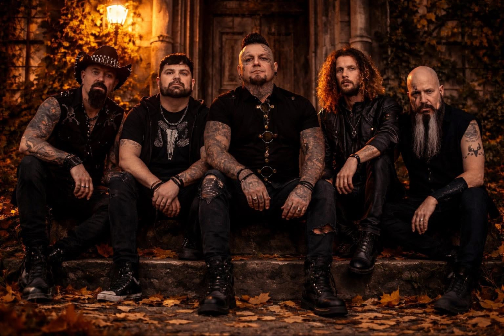

Maine's Musician Hub
Maine's Musician Hub
Melodic Hard Rock • Biddeford Maine

Sygnal To Noise is a melodic hard rock band founded in 2013 by frontman Coopa, a seasoned singer/songwriter in the New England music scene.
Blending influences from legendary artists like Queen, KISS, Stone Temple Pilots, David Bowie, Prince, Alice In Chains, and Foo Fighters, STN delivers a powerful mix of melody and hard-hitting riffs while keeping true rock ‘n’ roll alive.
Known for their high-energy, no-tracks, no-autotune live performances, the band prides itself on authenticity and raw stage presence.
🎤 Available for gigs
📍 Based in Maine
For booking or inquiries, please contact via website or facebook.